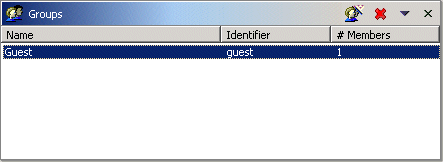
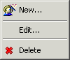
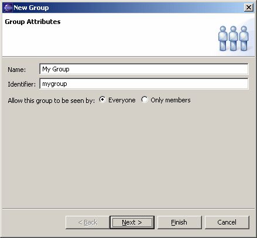
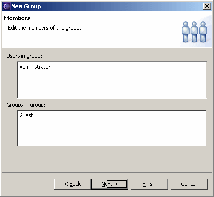
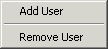
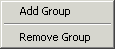
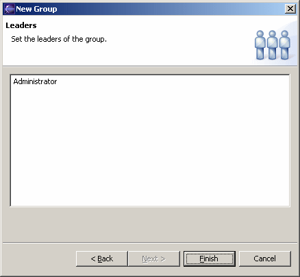
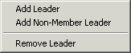

Collaboration Groups View
This view is for adding, modifying, and deleting groups from the collaboration server. It is part of the Collaboration Administration perspective.

A group essentially consists of users and other groups. A group may or may not be public. A public group is visible to everyone; that is, it is included in every list of groups displayed for selection. In contrast, a non-public group is only visible if the current user is a member of the group (or is the administrator).
A group also may have zero or more leaders. A leader has special privileges with respect to the group, such as the ability to add and remove members. A leader need not be a member of the group.
Only the administrator may add and delete groups unless the server allows open enrollment, in which case anyone may add a group, and group leaders may delete the groups they lead. In any case, group leaders may modify a group.
Tool Bar
The tool bar has the following buttons
- Add a group using the group wizard (described below).
 Delete the selected groups.
Delete the selected groups.
The tool bar menu contains the following items
- Refresh - Refresh this view from the collaboration server. (The view does not update automatically in response to changes on the server.)
- Import Groups - Add groups described in an XML file produced by the Export Groups item.
- Export Groups - Export the groups to an XML file suitable for use by the Import Groups item.
Group List
The columns in this list show the group name, identifier and number of members. If it is open, the properties view shows additional information about the selected group, such as the leaders.
The context menu contains the following items
|
 |
Group Wizard
The group wizard is for adding or editing a user.

The name is used for display purposes. It must be unique.
The identifier is used internally to identify a group. It must be unique, and is typically some portion of the group name.
The Everyone radio button makes the group visible to everyone (in other words, public). The Only Members radio button makes the group visible only to group members (in other words, non-public).

| The Users list shows the users that are members of the group. The context menu allows users to be added and removed from the group. |  |
| The Group list shows the groups that are members of the group. The context menu allows groups to be added and removed from the group. |  |

| The list shows the leaders of the group. The context menu allows leaders to be added and removed from the group |  |
.